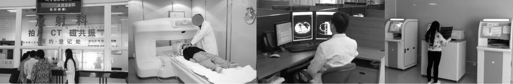

医院管理逐步走向数字化
2021 年 3 月，国家卫生健康委印发《医院智慧管理分级评估标准体系（试行）》，推动医院管理走向精细化和智能化。
飞利浦 · 医疗产品 UX · 数据密集型产品
案例整理中
放射科主任需要了解科室内各类高价值设备的运行情况。在飞利浦，我参与设计科室管理端和数据展示大屏，把设备状态和使用数据集中呈现，帮助主任快速了解科室运营情况。
我在两家医院的试点阶段参与了六个月的用户研究与 UI/UX 设计。在业务团队的支持下，我参与前期需求讨论、迭代界面、协助开展现场设计评审，并为现场工程师设计装机工具界面。

预约和排队数据分散在医院不同的系统中。项目能从放射信息系统（RIS）获取检查完成量和报告量等汇总数据，但缺少各环节的排队人数和等待时长。现场人员也会疏导患者，因此，现有数据更适合用来了解设备使用情况，难以据此判断患者在哪个环节滞留。
2021 年 3 月，国家卫生健康委印发《医院智慧管理分级评估标准体系（试行）》，推动医院管理走向精细化和智能化。
一线同事的反馈帮助我们缩小了设计范围，聚焦设备管理。科主任还要兼顾人员管理、医疗安全、教学和科研。
| 团队 | 明确范围 | 设计与数据准备 | 开发与评审 | 部署与推广 |
|---|---|---|---|---|
| 业务团队 | 联系合作医院 | 协助与医院团队沟通 | 协调医院现场设计评审 | 整理总结并推广 |
| 设计团队 | 讨论前期需求 | 迭代 UI/UX 设计 | 参与现场设计评审 | 调整界面并设计部署工具 |
| 开发团队 | 参与方案讨论 | 准备后端数据环境 | 开发方案 | 现场安装和部署 |
我们与放射科、设备管理和信息技术团队的代表在医院现场评审设计，讨论如何用更清楚的设备状态和使用数据支持日常管理。工作流程效率、放射剂量和人员安全是后续可以评估的方向。
团队把试点和推广过程中现场工程师的操作步骤整理成可复用的装机工具。
关键设备数据总览、大屏展示、实时设备数据、预置报表下载和基础预警。
管理总览、数据查询、报表维护、大屏展示、服务器监控和预警。
整合不同系统的数据，扩展报表生成、数据查询、可视化和分析能力。